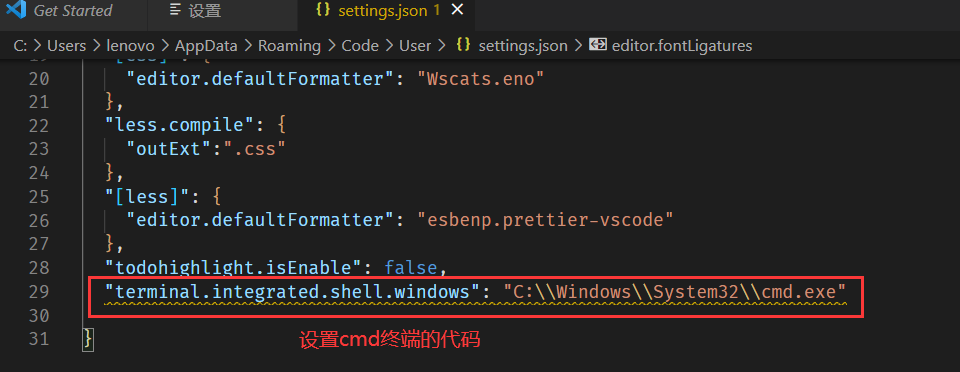
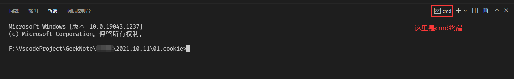
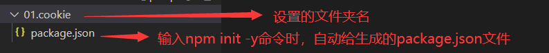
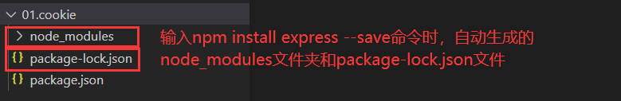

03_node的使用方法
如何用npm去安装工具包？
1.可以在cmd中使用npm对要下载的工具包进行全局安装，如命令npm install hexo-cli -g（该命令是对hexo包进行全局安装）
2.也可以在vscode中对文件右击从终端打开，使用npm对要下载的工具包进行全局安装，或者仅对建立的文件进行局部安装，如命令npm install express（该命令是对express包进行局部安装）。
这里的从终端打开，有两种终端方式：一是powershell终端。在文件夹中按住shift键右击空白区，出现在此处打开powershell窗口，这是powershell在文件中的打开方式，而在vscode中打开powershell需要配置settings，设置–搜索框中输入settings–点击“在settings.json中编辑”–以json格式输入对应的设置powershell的代码。而是cmd终端。在桌面win+r，输入cmd，出现cmd窗口，这是cmd在电脑中的打开方式，而在vscode中打开cmd也需要配置settings，设置–搜索框中输入settings–点击“在settings.json中编辑”–以json格式输入对应的设置cmd的代码。如下图所示
 如何看vscode中的终端设置的是哪个终端？在vscode从终端打开后，终端窗口的右边显示powershell或者cmd。如下图所示 vscode安装工具包及使用步骤：
1.在vscode中，先建立一个空文件（注意文件名不要和工具包名一样）。
2.把这个文件从终端打开，输入命令npm init -y（init是启动的意思，注意这个是使用的node，需要先在cmd中全局安装node，才可以在vscode中使用node和npm的命令），空文件夹下会自动出现package.json文件。
3.继续输入命令npm install 包名 –save ，如npm install express –save（这是安装express包的命令），下图是输入npm install express –save命令例子
4.安装完成，之后就可以根据你安装的工具包的官网，去查文档使用你的工具包了。
本作品采用 知识共享署名-非商业性使用-禁止演绎 4.0 国际许可协议 进行许可。